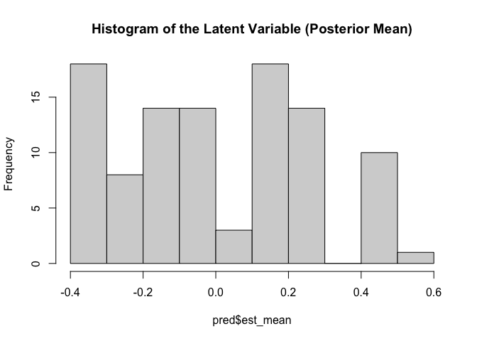
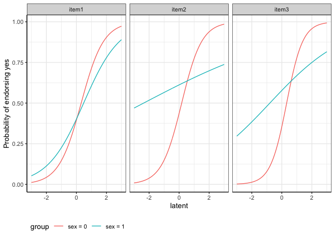

LIDIF is designed to detect differential item functioning (DIF) in binary and/or ordinal items.
Here we provide a sample with details on how to estimate DIF coefficients, variance, predict the latent variable and visualize DIF effects in categorical variables.
Installation
You can install the development version of LIDIF like so:
library(devtools)
## install LIDIF function
install_github("ZelingH/LIDIF")
library(LIDIF)LIDIF comes with a simulated data set.
# load sample data
data(binsurvs)The sample data consists of two parts. The first part contains the binary items:
head(binsurvs$X)
#> item1 item2 item3
#> 1 1 1 0
#> 2 1 0 1
#> 3 1 0 0
#> 4 1 0 1
#> 5 0 0 0
#> 6 0 1 1Notice that we ask users to code the binary responses as 0 and 1.
The second part is the covariate information. We are interested in testing the DIF effects for both sex and age. The continuous covariate age has been standardized.
head(binsurvs$Z)
#> age sex
#> 1 1.7858561 0
#> 2 -0.2906848 0
#> 3 -1.6375232 0
#> 4 0.7566259 1
#> 5 -0.2153077 1
#> 6 -0.6620240 1Prepare the data
In the first step, we sort our sample data into the format of LIDIF function input.
surv.list = prepare_data(X = binsurvs$X, # item matrix
Z = binsurvs$Z # covariates matrix
)surv.list is a list of two components.
Run LIDIF function
The LIDIF function takes the surv.list as the model input and you need to specify the types of items (binary or ordinal) in type_list arguments. To improve computational efficiency, LIDIF leverages the benefits of parallel computation and you can specify the number of computing cores in cl_num.
Below is the estimating procedures in LIDIF. To ensure estimation accuracy, LIDIF has a built-in random initialization procedure. You can skip the random initialization by specifying your own starting point in init_input. In random initialization, the default number of repeated samples init_nums (m) = 30, iterations init_maxit (k) = 5 and the percentage of sampling random_per = 0.05. These default setting yields accurate estimation results in our simulation studies (1000 samples with 5 items). If you have fewer observations, increasing random_per is recommended.

res = LIDIF(dat.list = surv.list,
cl_num = 2, # number of cores
type_list = "binary", # item type
maxit = 5, # m = 1
random_per = 0.5, # number of random samples
init_nums = 10, # k = 2
init_maxit = 1)LIDIF function returns a list:
Estimated coefficients:
res$coefficients
#> $item1
#> (Intercept) age sex Y age:Y sex:Y
#> -0.35040012 -0.15330257 0.02454499 1.32842846 0.01397809 -0.50501653
#>
#> $item2
#> (Intercept) age sex Y age:Y sex:Y
#> -0.7584188 1.0482617 0.7104616 1.6480740 -0.3347585 -1.2945779
#>
#> $item3
#> (Intercept) age sex Y age:Y sex:Y
#> -0.6730431 0.1606238 0.9090364 1.9988738 -0.3031967 -1.4611568Estimated variance:
res$variance
#> $item1
#> (Intercept) age sex Y age:Y sex:Y
#> 0.1922462 0.1024513 0.3923845 0.9567616 1.1531339 5.6940933
#>
#> $item2
#> (Intercept) age sex Y age:Y sex:Y
#> 0.4077751 0.2119354 0.4454055 1.2343915 1.0297240 1.7765825
#>
#> $item3
#> (Intercept) age sex Y age:Y sex:Y
#> 0.5495628 0.1068510 0.6313915 4.0389546 1.1220826 4.9731839and the estimated variance-covariance matrix:
res$covInference of the DIF
Testing for individual DIF effects:
summary_LIDIF(res)
#> $item1
#> Loading Estimate Odds Ratio p_value FDR BF
#> (Intercept) -0.33 -0.35 0.7 (0.3, 1.66) 0.424 0.764 1
#> age -0.15 -0.15 0.86 (0.46, 1.61) 0.632 0.875 1
#> sex 0.02 0.02 1.02 (0.3, 3.5) 0.969 0.990 1
#> Y 0.80 1.33 3.78 (0.56, 25.68) 0.174 0.728 1
#> age:Y 0.01 0.01 1.01 (0.12, 8.32) 0.990 0.990 1
#> sex:Y -0.45 -0.51 0.6 (0.01, 64.84) 0.832 0.936 1
#>
#> $item2
#> Loading Estimate Odds Ratio p_value FDR BF
#> (Intercept) -0.60 -0.76 0.47 (0.13, 1.64) 0.235 0.728 1.00
#> age 0.72 1.05 2.85 (1.16, 7.03) 0.023 0.410 0.41
#> sex 0.58 0.71 2.03 (0.55, 7.53) 0.287 0.728 1.00
#> Y 0.85 1.65 5.2 (0.59, 45.86) 0.138 0.728 1.00
#> age:Y -0.32 -0.33 0.72 (0.1, 5.23) 0.741 0.930 1.00
#> sex:Y -0.79 -1.29 0.27 (0.02, 3.74) 0.331 0.728 1.00
#>
#> $item3
#> Loading Estimate Odds Ratio p_value FDR BF
#> (Intercept) -0.56 -0.67 0.51 (0.12, 2.18) 0.364 0.728 1
#> age 0.16 0.16 1.17 (0.62, 2.23) 0.623 0.875 1
#> sex 0.67 0.91 2.48 (0.52, 11.78) 0.253 0.728 1
#> Y 0.89 2.00 7.38 (0.14, 379.14) 0.320 0.728 1
#> age:Y -0.29 -0.30 0.74 (0.09, 5.89) 0.775 0.930 1
#> sex:Y -0.83 -1.46 0.23 (0, 18.35) 0.512 0.838 1Testing for combined uniform and non-uniform DIF effects for sex:
summary_LIDIF(res, terms = "sex")
#> $item1
#> X2 df Pr(>X2)
#> sex 0.05206683 2 0.9743025
#>
#> $item2
#> X2 df Pr(>X2)
#> sex 1.776947 2 0.4112831
#>
#> $item3
#> X2 df Pr(>X2)
#> sex 1.313009 2 0.5186612Predict the latent variable
With the output from LIDIF function, we could predict the latent variable via the posterior mean and its variance via the posterior variance.
pred = predict_LIDIF(dat.list = surv.list,
coefs_list = res$coefficients)The histogram of posterior mean:
hist(pred$est_mean, main = "Histogram of the Latent Variable (Posterior Mean)")
Item Characteristic Curves (ICC)
Plot the DIF effects for sex using ICC curves:
# specify the covariate matrix
tt = cbind("age"= c(mean(surv.list$Z[,"age"]),mean(surv.list$Z[,"age"])), # age is set as population average
"sex" = c(0,1))
getICC(res$coefficients,
cov_mat = tt,
compare_var = "sex",
type_list = "binary")